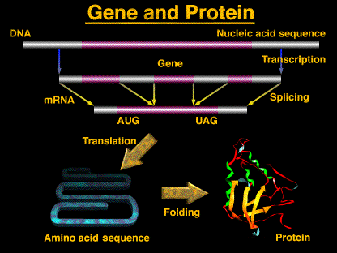

| 遺伝子情報処理 Home Page |
| 遺伝子情報処理って何? |
| 配列解析 |
| IFS |
| リンク集 |
 |
遺伝子情報処理って何? |
遺伝子とは
近頃、「遺伝子」や「DNA」という単語をニュース、新聞などで見かけることが多くなりました。2,3日に一度はどこかで耳にするといっても過言ではないように思われます。
さて、この遺伝子とはいったい何でしょうか?
生物のからだはさまざまな部品(組織)から構成されていますが、もとはひとつの細胞(受精卵)が分裂してできたものです。
ではどうしてもとは同じ細胞が形も性質も異なる組織になることができるのでしょうか?
それは細胞が持つ多様性=細胞内でどのようなタンパク質が作られるか=によるのです。たとえば眼のレンズになる細胞はクリスタリンというタンパク質を生成します。この細胞が組織化されると、「レンズ」ができあがります。
遺伝子とはこういったタンパク質の構造情報(どういうアミノ酸でできているのか)と制御情報(いつどのくらいそのタンパク質を作るのか)を記述した、生物の設計図と呼ぶことができます。生物の細胞の中に格納されていて、必要に応じてこの設計図をもとに私たちの体を構成する物質が作られています。
この設計図が「遺伝子情報」であり、それを記録している媒体が「DNA」なのです。
「DNA」は、「ヌクレオチド」というユニットがつながった鎖からできています。この鎖が2本の螺旋構造をとっています。鎖のユニットである「ヌクレオチド」には4種類あり、その配列のならび方、これを「塩基配列」と呼びます。この塩基配列そのものが「遺伝子情報」であり、設計図の役割をしています。
遺伝子からタンパク質へ

この「遺伝子情報」は、DNAとよく似た性質ののRNAという物質にコピーされます(transcription)。
コピーされた情報はいくつかの処理を経てアミノ酸の鎖に翻訳されていきます。
このアミノ酸の鎖は自動的に折り畳まれて、タンパク質になります。
この翻訳→タンパク質合成までのプロセスは細胞の中で行なわれます。
このようにして作られたタンパク質は骨、筋肉、血液などなど、生物の体の部品、組織となっていきます。
つまりタンパク質とその設計図であるDNAは生物の最も重要な構成物質といえるでしょう。
こういったDNAの塩基配列やタンパク質のアミノ酸配列の自動分析法はすでに開発されており、配列データはデータベースに日々蓄積されています。
しかし、現状では、それらの十分な利用がなされているわけではありません。
それは、配列がわかるということと、配列情報の意味がわかるということは別の話だからです。
たとえば、DNAの塩基配列がわかっても、その中のどの部分が遺伝子なのか、また何の遺伝子なのかというのはわからないからです。
この配列の持つ意味を探るのが遺伝子情報処理というものです。
ここでは、遺伝子情報処理の中で基本的な技術である
配列解析について扱います。